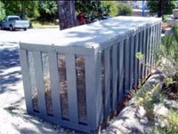
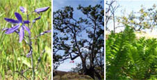

Initiatives environnementales
À titre de propriétaire et d'exploitant de la cale sèche d'Esquimalt, Travaux publics et Services gouvernementaux Canada est chargé de mettre en œuvre des programmes pour atteindre ses objectifs en matière d'environnement. Voici des exemples d'initiatives environnementales clés:
Qualité de l'air

La qualité de l'air est une grande préoccupation de la CSE. Il est particulièrement important de contrôler les pertes de peinture à la pulvérisation et les poussières en raison de la présence á proximité d'un quartier résidentiel et du milieu marin.
Une station de surveillance de la qualité de l'air a été installée afin d'obtenir des données instantanées sur les concentrations de PM10 (particules d'un diamètre inférieur à 10 microns) dans le secteur. Ces données permettent à la CSE de surveiller l'efficacité des mesures prises pour contrôler les poussières et la peinture.
Eaux usées et eaux pluviales
La CSE a mis en œuvre un certain nombre d'initiatives destinées à améliorer la qualité des eaux pluviales se déversant dans le port et des eaux usées évacuées dans le réseau d'égouts. En voici des exemples:
- Les eaux usées mazouteuses produites aux installations de la CSE sont
recueillies afin d'être éliminées adéquatement
et peuvent être traitées sur place par une entreprise qui
fournit des services de séparation et de traitement des eaux mazouteuses.
- Les eaux grises et les eaux noires produites aux installations de la CSE sont évacuées
en conformité avec les exigences des autorités responsables
du réseau d'égouts de la localité.
- Grâce aux améliorations apportées au réseau
d'égout pluvial, les eaux de ruissellement sont traitées
par un dispositif de séparation des huiles et des sédiments
avant d'être rejetées un milieu marin. Ce système élimine
les particules fines et les substance mazouteuses dans les eaux pluviales.
 Des
détecteurs de déversement d'hydrocarbures installés
aux alentours de la CSE servent à détecter
rapidement la présense d'hydrocarbures sur l'eau et à alerter
le personnel opérationnel. Si un déversement venait à atteindre
le port, les détecteurs déclencheraient un système
d'alarme pour avertir les employés qualifiés pour intervenir.
Des
détecteurs de déversement d'hydrocarbures installés
aux alentours de la CSE servent à détecter
rapidement la présense d'hydrocarbures sur l'eau et à alerter
le personnel opérationnel. Si un déversement venait à atteindre
le port, les détecteurs déclencheraient un système
d'alarme pour avertir les employés qualifiés pour intervenir.
Réduction des déchets solides
La réduction, le recyclage, le compostage et l'achat de fournitures à contenu recyclé sont des éléments de l'approche adoptée par la CSE en matière de gestion des déchets. Le Programme de recyclage de la CSE porte notamment sur le matériel et les founitures de bureau recyclabes, les piles et batteries usagées, les cartouches d'encre et les huiles usées. Les installations de la CSE sont également dotées d'un composteur qui ser â composter les résidus de jardin.
Matières dangereuses

Enceinte de stockage des matières dangereuses
Les employés sont incités à la prudence lorsqu'ils sont en présence de matières dangereuses dans les installations de la cale sèche d'Esquimalt et, à cette fin, reçoivent une formation sur les méthodes adéquates de manipulation, de stockage et d'élimination de matières comme les huiles, les carburants, les particules abrasives, les peintures, les solvants, l'antigel et les piles et batteries. Par souci d'amélioration continue de la sécurité des travailleurs et de réduction des risques de répercussions sur l'environnement, la SCE a inclus des lignes directrices sure a gestion des matières/déchets dangereux dans son Manuel des meilleures pratiques de gestion de l'environnement.
La CSE, qui participe au Programme d'approvisionnement écologique du gouvernement fédéral, s'emploie également à dresser un inventaire de produits de rechange plus écologiques.
Réduction de la consommation d'énergie et d'eau
Compresseaur à refroidissement par air
La Cale sèche d'Esquimalt a mis en œuvre plusieurs initiatives afin de réduire sa consommation d'énergie et d'eau douce et d'améliorer l'efficacité des systèmes existants.
Ainsi, elle a remplacé un compresseur à refroidissement par eau par un compresseur à refroidissement par air qui consomme beaucoup moins d'eau douce. La chaleur produite par le fonctionnement du compresseur est également utilisée pour chauffer les ateliers voisins, ce qui procure des économies d'énergie additionnelles.
Voici d'autres exemples de mesures de conservation :
- Installation de buses à débit réduit pour pulvériser les « rideaux d'eau » utilisés pour capter la poussière lors des opérations de décapage au jet de sable
- Utilisation d'ampoules fluorescentes compactes pour l'éclairage des locaux
- Installations de dispositifs de mise hors tension des appareils d'éclairage et des systèmes informatiques lorsqu'ils ne sont pas utilisés
Protection de la faune
Rideau de bulles d'air
Lorsque des navires entrent et sortent de la cale sèche d'Esquimalt, il arrive parfois que des animaux marins pénètrent dans le bassin inondé et s'y échouent. Un rideau de bulles d'air, un dipositif sûr, efficace et peu coûteux, a été aménagé à l'entrée du bassin pour dissuader des espèces animales, comme les phoques et les poisson, d'y entrer.

Rideau de bulles d'air en service; Sauvetage d'un phoque avant qu'il ne franchisse le rideau de bulles d'air
Écosystèmes uniques
Les vestiges d'un écosystème unique et en péril de chênes de Garry sont présents sur une partie du terrain de la cale sèche d'Esquimalt. On a dressé un inventaire de la végétation afin de déterminer si des espèces en péril étaient présentes dans le secteur. La CSE collabore avec des universités et des groupes communautaires de la région à des activités de protection et de rétablissement du milieu naturel.
Améliorations des installations
 Les
personnes travaillant à la cale sèche d'Esquimalt jugent
qu'il est important que leur milieu de travail soit positif. Des amèliorations
ont ètè apportées au fil du temps aux abords des installations
afin qu'ils reflètent les valeurs culturelles et historiques de
celles-ci.
Les
personnes travaillant à la cale sèche d'Esquimalt jugent
qu'il est important que leur milieu de travail soit positif. Des amèliorations
ont ètè apportées au fil du temps aux abords des installations
afin qu'ils reflètent les valeurs culturelles et historiques de
celles-ci.